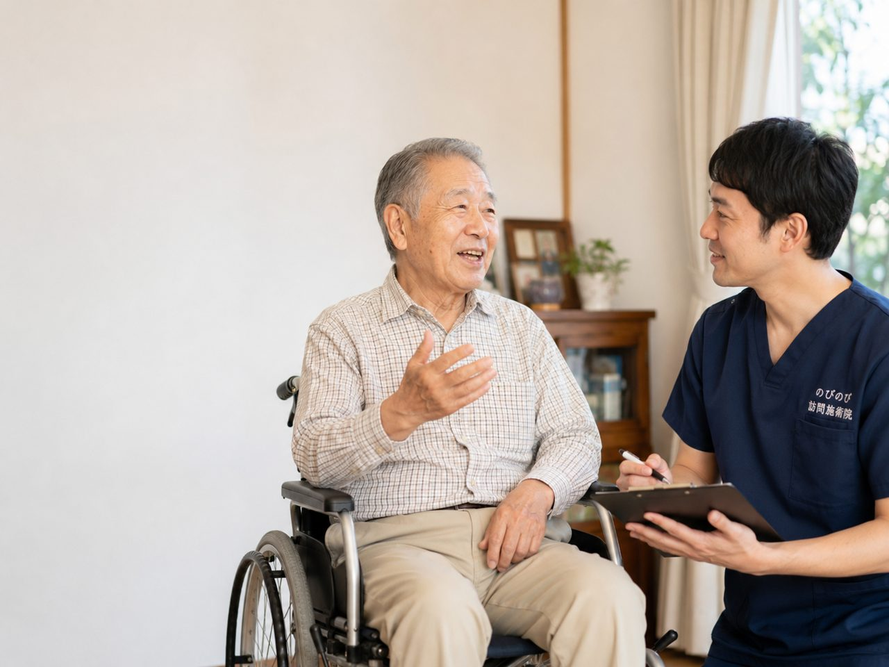

医師が必要と認めた、麻痺にともなう慢性の痛みやこわばりなら、はり・きゅうで医療保険が使え、1種類の施術で1回あたり総額3,950円、1割負担なら約395円。主治医やリハビリと連携しながら、こわばりを和らげるお手伝いをします。 訪問鍼灸マッサージを行うのびのび訪問施術院は、大阪府・兵庫県の対応エリアで、ご自宅や施設へ国家資格を持つ施術者がうかがいます。
この記事のポイント
慢性的に続く手足の痛みやつっぱりで、主治医が鍼やお灸での治療が必要と認めて同意書を書いてくれ、かつ通院がむずかしければ、はり・きゅうの医療保険が使えます。同意書の段取りは、当院にお任せください。まずは主治医に、こわばりで困っていることを伝えてみてください。
そもそも痙縮とは、なぜ手足がつっぱるのか
脳梗塞や脳出血で脳の一部が傷つくと、筋肉を動かす命令の伝わり方が乱れ、意図しないのに筋肉がぎゅっと縮んだままになることがあります。これが痙縮と呼ばれる状態です。手指が握りこんで開きにくい、ひじが曲がったまま伸びない、足首が内向きに固まってつま先立ちのようになる。
こうした形で日常のあちこちに影響が出てきます。発症からしばらくして、麻痺した側の力が抜けきらず、かえって過剰に緊張してしまう時期に現れやすいのが特徴です。動かしにくいだけでなく、つっぱりそのものが痛みやだるさの原因になり、夜間にこむら返りのような苦しさを感じる方もいらっしゃいます。
急に呂律が回らない・麻痺が悪化したときは、迷わず救急へ
痙縮のケアの話をする前に、どうしてもお伝えしておきたいことがあります。ろれつが急に回らなくなった、片側の手足に急に力が入らなくなった、顔の片方がゆがむ、これまでなかった強い頭痛やめまい、意識がもうろうとする。こうした変化は、脳卒中の再発やほかの重い病気のサインかもしれません。「前と同じつっぱりだろう」と自己判断せず、すぐに救急や主治医へ連絡してください。
鍼やお灸は、こうした急な変化に対応するものではありません。あくまで、状態が落ち着いてから残るこわばりに、日々寄り添うためのものです。この線引きを、ご家族にも共有しておいていただけると安心です。
痙縮に鍼やお灸は保険で受けられますか
脳卒中の後遺症としての手足のつっぱりや痛みが慢性的に続いていて、主治医が「鍼やお灸での治療が必要」と認めて同意書を書いてくれれば、はり・きゅうの医療保険が使えます。病名が脳梗塞後遺症や脳出血後遺症であっても、慢性の痛みやしびれ、麻痺にともなうこわばりに対しては療養費の対象になり得ます。
同意書のやりとりは当院が段取りしますので、何から始めればよいか分からなくても大丈夫です。まずは主治医に、こわばりで困っていることと訪問の鍼灸を受けたい意向を伝えるところからです。先生に切り出しにくい方は「同意書を書いてもらえないとき」をご覧ください。
1回いくらかかる？往療料や介護保険との関係は
医療保険を使うので、自己負担は自己負担分だけです。訪問して一人が1種類の施術を受けると、施術の総額は3,950円。ここから1割負担の方で1回およそ395円になります。
そしてこの費用は、介護保険の区分支給限度額とは別の枠で扱われます。デイサービスや訪問介護をめいっぱい使っている方でも、その枠とは別に鍼灸を受けられるのは、続けていくうえで安心できる点だと思います。回数に応じて、週2回ならひと月およそ3,160円（1割の方）といった見当になります。枠の話が気になる方は「保険の使い分けのページ」もあわせてどうぞ。
固まった手足に、鍼とお灸はどう働きかけるのか
つっぱった筋肉は、縮んだまま血のめぐりが悪くなり、それがさらにこわばりや痛みを呼ぶという悪い流れに入りがちです。鍼やお灸で緊張した筋肉やそのまわりに働きかけ、めぐりをうながすことで、張りつめた感じがやわらぎ、痛みが楽になることが期待できます。
傷ついた脳そのものを元に戻すものではありませんが、二次的に固くなった筋肉や関節まわりの状態を整えることは、日々の動かしやすさや眠りやすさにつながります。強い刺激で無理に伸ばすのではなく、その日の緊張の具合を確かめながら、少しずつゆるめていくのが訪問での進め方です。
麻痺した側だけでなく、体全体のバランスをみる
つっぱっている手足だけに目を向けると、かえって見落としが生まれます。麻痺した側をかばうと、反対側の脚や腰、背中に負担が集中し、そちらに新たな痛みが出てくることがよくあります。座っている時間が長ければお尻や太ももが固まり、車いすの方なら姿勢のくせが体のゆがみにつながります。
訪問では、つっぱりの強い部分を和らげながら、それを支えている全身の筋肉の状態も一緒に確かめていきます。痛む側の膝をかばううちに反対側の脚の筋力が落ちていた、というのも全体をみるなかで早めに気づけることのひとつです。困っている場所だけでなく体全体を見られるのは、じっくり時間をとれる在宅施術ならではです。
リハビリや主治医と、どう連携していくか
痙縮のケアは、鍼灸だけで完結するものではありません。理学療法士による関節を動かす訓練、医師による内服やボツリヌス療法といった治療、それぞれに役割があります。訪問の鍼灸は、そうした取り組みと張り合うものではなく、こわばりを和らげて動かしやすい状態を保つことで、リハビリに取り組む土台を支える立場です。
施術で気づいたお体の変化は、ご家族を通じて、あるいはケアマネジャーを介して、関わる方々と共有できるようにしています。皆で同じ方向を向いてこそ、日々の暮らしが少しずつ楽になっていきます。
通院の負担をなくして、こわばりのケアを続ける
手足がつっぱっている方にとって、治療に出かけること自体が大きなひと仕事です。麻痺した側をかばっての着替え、車の乗り降り、待合室で順番を待つあいだの緊張。着いたころには疲れきってしまう、という声もよく耳にします。
訪問なら、住み慣れた部屋で、いつものベッドや椅子に座ったまま施術を受けられます。移動で消耗しないぶん、こわばりを和らげることに専念できますし、続けやすさという点でも在宅は理にかなっています。ご家族が付き添いのために予定を空けずにすむ場合もあります。
暮らしのなかで、こわばりをためこまない工夫
施術と合わせて、日々のちょっとした心がけがつっぱりを助けます。麻痺した側の手足を冷やさないよう、季節を問わず一枚かけておく。痛くない範囲で、握りこんだ手をやさしく開いたり、ひじや足首をゆっくり動かしたりする時間を、無理のない程度に持つ。
長く同じ姿勢でいると固まりやすいので、こまめに姿勢を変える。こうした積み重ねは、施術の効果を保つ助けになります。訪問のたびに、その方の暮らしに合った動かし方をお伝えし、ご家族にも介助のコツを共有していきます。
施術を続けている方から伺う様子
脳梗塞のあと、麻痺した側に鍼やお灸を続けている方から、「表情がやわらかくなった」「体が前より動かしやすい」といった声を伺うことがあります。
効果の出方には個人差があり、どなたにも同じ変化をお約束できるものではありません。それでも、こわばりが少し楽になることで暮らしのしづらさがやわらぐなら、続ける意味があると思っています。
よくある質問
脳梗塞の後遺症でも保険で受けられますか？
慢性的に続く手足の痛みやつっぱりで、主治医が鍼やお灸での治療が必要と認めて同意書を書いてくれ、かつ通院がむずかしければ、はり・きゅうの医療保険が使えます。同意書の段取りは、当院にお任せください。まずは主治医に、こわばりで困っていることを伝えてみてください。
痙縮は施術で完全に治りますか？
傷ついた脳そのものを元に戻したり、つっぱりを完全になくしたりできると言い切ることはできません。鍼やお灸、あわせて行う手技は、固くなった筋肉やまわりのめぐりを整え、こわばりや痛みを和らげる助けになります。急に麻痺が悪化するなどの変化があるときは、施術より先に主治医や救急へご連絡ください。
脳梗塞のあとの手足のつっぱりでも受けられますか？
麻痺やつっぱり（痙縮）にともなう肩や腰の痛み、手足のこわばりについて医師が必要と認め、通院がむずかしければ対象になる場合があります。主治医と連携して進めます。
手足のつっぱりは鍼灸で和らぎますか？
固くなった筋肉を穏やかに和らげ、動かしやすさを保つ助けになることがあります。無理に伸ばすことはしません。
つっぱりのケアはリハビリと一緒に受けられますか？
はい。リハビリを続けながら、まわりの筋肉を和らげる位置づけです。
つっぱりのある家族への介助のコツはありますか？
負担の少ない介助や、こまめに姿勢を変えることなどをお伝えします。